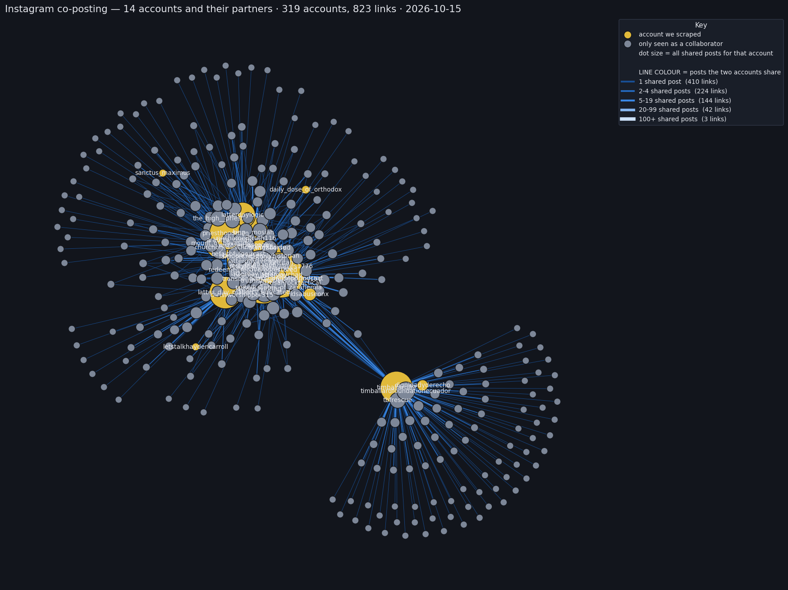

The network around the group
Every pair of accounts Instagram credited together, counted across our captures of the host account latterdayavenger and the thirteen accounts credited on its seven group posts. That is the group of “Who went first,” plus everyone those fourteen accounts ever co-posted with.
The map

What the map shows
The host account latterdayavenger is the hub: 121 partners and 1,450 shared posts, more than twice any other account. Two accounts sit next to it — truthismytribe (830 shared posts) and latterdaychad (792) — and then the graph falls away into a long tail of accounts seen only as collaborators, most of them one-off.
| account | scraped | partners | shared posts |
|---|---|---|---|
| latterdayavenger (host) | yes | 121 | 1450 |
| truthismytribe | yes | 76 | 830 |
| latterdaychad | yes | 91 | 792 |
| latterday_rants | — | 14 | 385 |
| priesthoodmen | yes | 85 | 310 |
| londonthefamilyhistorian | yes | 65 | 307 |
| timballard89 (Ballard) | yes | 107 | 298 |
The heaviest links are also the plainest: latterday_rants–latterdayavenger (136 shared posts), latterdayavenger–latterdaychad (115) and latterdayavenger–truthismytribe (109). Only three links in the whole map reach the 100+ band; the great majority are a single shared post.
How a link is counted
A post links two accounts if both are on it: the account that posted it plus everyone Instagram listed as a collaborator. A link’s weight is the number of distinct posts behind it, merged across every capture we hold for the accounts involved. Instagram leaves the poster out of its own collaborator list, which is why a self-post still links the poster to the people credited with them.
Read it yourself
The full network, and the data behind it:
- Open the interactive network
- edges.tsv — every link, with the number of shared posts and the first and last date on it.
- nodes.tsv — every account, whether we scraped it, and its partner and shared-post totals.
- Who went first — the seven group posts themselves, and the math of the seats.